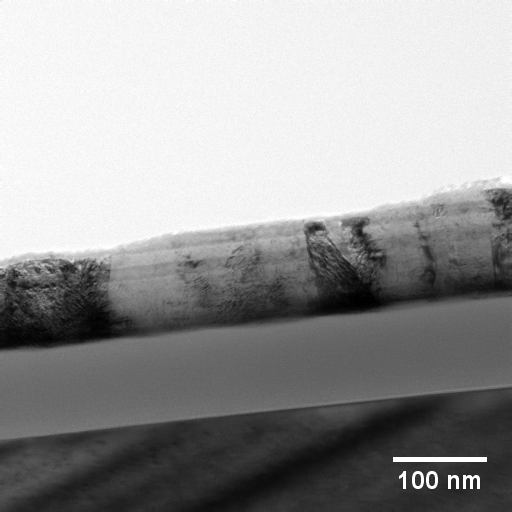
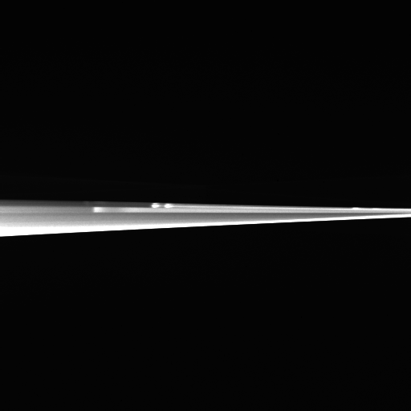
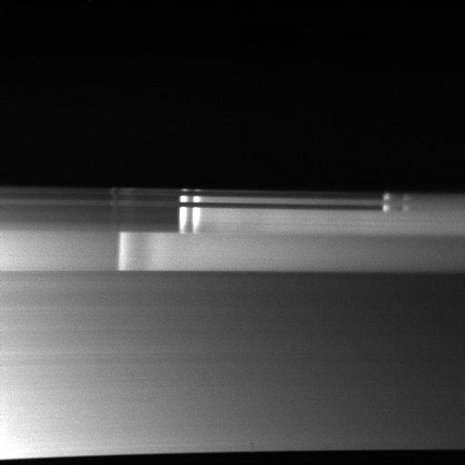
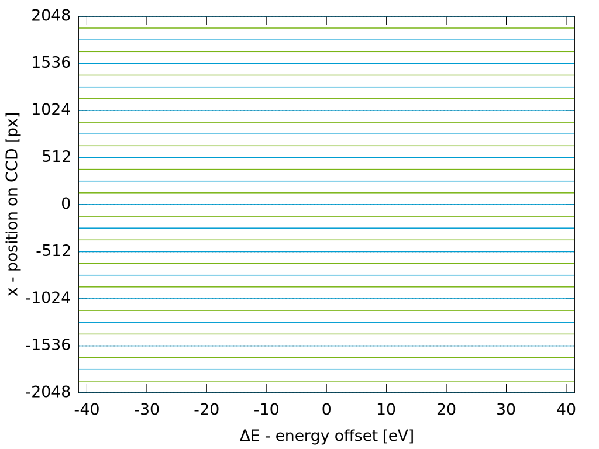

Your browser doesn't support the features required by impress.js, so you are presented with a simplified version of this presentation.
For the best experience please use the latest Chrome, Safari or Firefox browser.
Spatially resolved EELS (SR-EELS) with an in-column Omega filter - characterization of energy filter aberrations and their correction by image processing
Michael Entrup
version: 05.09.2014
Tested with Chromium 36.0.1985.125 on Ubuntu 14.04. This presentation may not run smooth on other systems.
<script type='text/javascript'>
// Say hello world until the user starts questioning
// the meaningfulness of their existence.
function helloWorld(world) {
for (var i = 42; --i >= 0;) {
alert('Hello ' + String(world));
}
}
</script>
<style>
p { color: pink }
b { color: blue }
u { color: 'umber' }
</style>
To bad there is no video about the Zeiss Libra 200FE with an in-column Omega filter on youtube.
SR-EELS - An introduction
Dispersive coordinates and selective windows (1)
L. Reimer, I. Fromm and R. Rennekamp
We call those coordinates "dispersive" for which the one- or two-dimensional intensity distribution is recorded and use different symbols for the "selective" windows.
[Reimer1989]
Dispersive coordinates and selective windows (2)
Dispersive coordinates
Selective windows
x, y (space coordinates)
ΔA (specimen area)
d (diameter of selected area)
Δy (width of slit parallel to x)
ΔE (energy loss)
ΔW (energy window)
Mode
I (dispersive/selective)
ESI (electron spectroscopic imaging)
I(x, y/ΔW)
EELS (electron energy-loss spectroscopy)
Spectrum mode
I(ΔE/ΔA)
Space-dispersive mode
I(x, ΔE/Δy)
For comparison - ESI data cube
high number of lateral channels
limited number of energy channels
limited energy resolution
For comparison - EELS data cube
high number of energy channels
high energy resolution
limited number of lateral channels
lateral resolution can be very high
SR-EELS data cube
high number of energy channels
high energy resolution
only one lateral axis
high lateral resolution (x-axis)
SR-EELS - first impression

conventional TEM

SR-EELS (~475eV to ~750eV)
By default, only up to 25% of our camera area is used. The shown spectrum magnification (SpecMag) results in only ~8%.
How can we increase the lateral extend?
SR-EELS - manipulating the magnification
How can we increase the lateral extend?
projective I controls the lateral resolution (nm/px)
no effect on the size at the camera
by default, the energy-filter is not adjusted
projective II controls the lateral and energy resolution (more details on the next slides)
SpecMag - Some quantitative values
Projective II - SpecMag values
SpecMag value
energy range
lateral extend
315
315 is the highest available value
~83 eV
~25%
250
~105 eV
~19%
200
~130 eV
~16%
163
~162 eV
~13%
125
~212 eV
~10%
100
~273 eV
~8%
There are some more ...
SpecMag - energy range
The energy range of a single SR-EELS image
SpecMag - lateral width
Without touching the energy filter, there is only a limited number of lateral channels (up to ~1000 for binning 1).
Zeiss WinTEM - Energy Filter Align (EFA)
Zeiss WinTEM - Energy Filter Align (EFA)
can be found at Service > Energy Filter...
control of 7 filter elements
4 dipole elements
-> shift the spectrum
3 quadrupole elements
-> deform and rotate the spectrum
deform means to compress or expand the spectrum in lateral direction
deform x (QSinK7): increase the lateral size
deform y (QSinK4): controls the focus of this axis
rotation (QCosK4)
EFA - in the field
SpecMag=100 and QSinK7=0%

SpecMag=100 and QSinK7=-36%
The optimized value of QSinK7 increases the lateral magnification by about 10 times.
Aberrations
Aberrations
The lateral extend decreases with increasing energy loss
This aberration is visible at all previous images
Described by a polynomial of 2nd (3rd) degree
Fit at top border
Fit at bottom border
(This plots were automatically created by SR-EELS_characterisation.ijm and they are only used to check the tabulated results.)
How can we characterise the aberrations?
Select a small aperture at the filter entrance plane.
Shift the aperture perpendicular to the energy dispersive direction.
Record a SR-EELS image at several positions of the aperture.
Aberrations - Method of characterization (1)
The red line bisects the camera area.
Aberrations - Method of characterization (2)
1024px by 1024px excerpts of 4096px by 4096px images. The red line bisects the camera area. The marks at the borders and the centre of the signal were automatically created by SR-EELS_characterisation.ijm.
Detection of the spectrum borders and the centres.
For intervals of 64 energy channels (adjustable).
The ImageJ macro uses a combination of a Gaussian fit and the build-in threshold routine.
The lateral extend decreases with increasing energy loss
This aberration attracts attention at all SR-EELS images
Described by a polynomial of 2nd degree
The lateral width changes at each energy channel
Highest value at the centre
The decrease limits the field of view
Described by a polynomial of 2nd degree
Width vs lateral position for \(\Delta E = 0\)
Aberrations - 2D-visualization
We can try to present the results using only a 2D graph. This represents the aberration on the camera.
A single function is used to fit all spectrum borders:
$$\tilde{x}(\Delta E) = \sum^2_{i,j=0}a_{ij}\cdot\Delta E^i\cdot x_0^j,$$
where \(x_0\) is the x-value of a spectrum border at \(\Delta E=0\).
Mathematically this is a function series:
$$f:\mathit{D}\ \mathsf{x}\ \mathbb{N} \to \mathit{Z}, \quad (x,n) \mapsto f_n(x).$$
This does not fully describe the aberration. The missing step is presented at the next section.
We need to combine both results to correct the SR-EELS images.
Correction by image processing
Correction - Combining \(\tilde{x}(\Delta E)\) and \(w(\Delta E, x)\)
To correct a SR-EELS image we need to transform the image coordinates.
The resulting image must have rectangular axes \(\Delta E\) and \(x\).
The curved axes \(\Delta \tilde{E}\) and \(\tilde{x}\) are recorded with a non curved detector.
\(\Rightarrow\) For each point at the corrected image \((x_1,x_2)\) we have to calculate the corresponding pixel of the distored image \((y_1,y_2)\).
$$(x_1,x_2) \mapsto (y_1,y_2)$$
As a pixel is an extended object, this results in further problems that we dicuss in the next section.
Correction - preparing improved 2D-visualization

We assume that the top image is the corrected SR-EELS image.
With \(\tilde{x}(\Delta E)\) and \(w(\Delta E, x)\) we can transform this image to fully visualise the aberration.


_SpecMag=315_QSinK7=0_225eV.png)